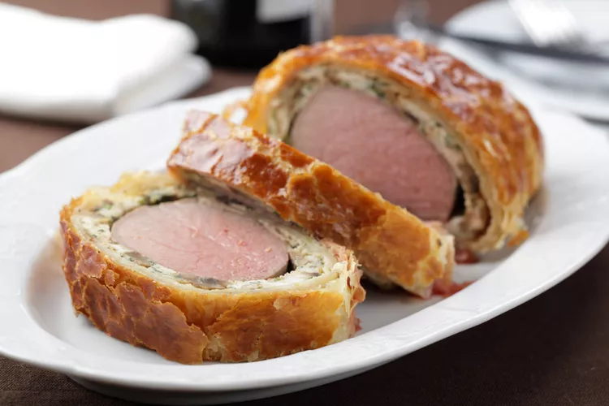

Beef Wellington

Description
Beef Wellington is impressive in presentation. It may also seem daunting the first time you pull out the recipe. These tips can help making your centerpiece-worthy main course easier.
Ingredients
- 2 1/2 pounds beef tenderloin
- 2 tablespoons butter, softened
- 2 tablespoons butter
- 1 onion, chopped
- 1/2 cup sliced fresh mushrooms
- 2 ounces liver pâté
- 2 tablespoons butter, softened
- 1 (17.5 ounce) package frozen puff pastry, thawed
- 1 egg yolk, beaten
- 1 (10.5 ounce) can beef broth
- 2 tablespoons red wine
- salt and pepper to taste
Steps
- Preheat the oven to 425°F. Place the frozen puff pastry on the counter so that it will have time to thaw. Afterward, prep the onion, mushrooms, and egg.
- Place the beef tenderloin in a small baking dish or pan, and spread it with two tablespoons of softened butter. Roast the tenderloin in the preheated oven for 10 to 15 minutes or until browned. Remove the tenderloin from pan, and allow it to cool completely. Reserve any juices from the baking dish.
- Next, increase the oven temperature to 450°F. Melt two tablespoons of butter in a medium skillet over medium heat. Add in the chopped onion and sliced mushrooms, and sauté them for five minutes. Remove the onions and mushrooms from the heat, and let the mixture cool.
- Next, mix two ounces of pâté with two tablespoons of softened butter, and season with salt and pepper to taste. Then, spread the pâté and butter mixture over the cooled beef. Top it with the onions and mushrooms.
- Roll out the puff pastry dough so that it's large enough to envelop the entire tenderloin. Place the beef on the pastry towards one side in the center. Fold the dough over the tenderloin, and seal all the edges, making sure the seams are not too thick. Trim the ends of the pastry if necessary, and tuck the ends under the beef.
- Place a rack in a roasting pan, and place the beef on top. (Our home cooks attest that the rack keeps the bottom of the pastry from getting soggy!) Cut a few slits across the top of the puff pastry to vent the steam, and brush it with the egg yolk. Bake it at 450°F for 10 minutes, then reduce heat to 425°F for 10 to 15 more minutes or until the pastry turns a rich, golden brown.
- Meanwhile, place all of the reserved juices in a small saucepan over high heat. Stir in the beef stock and red wine. Boil the mixture for 10 to 15 minutes, or until slightly reduced. Strain the sauce, and serve it over the Beef Wellington.